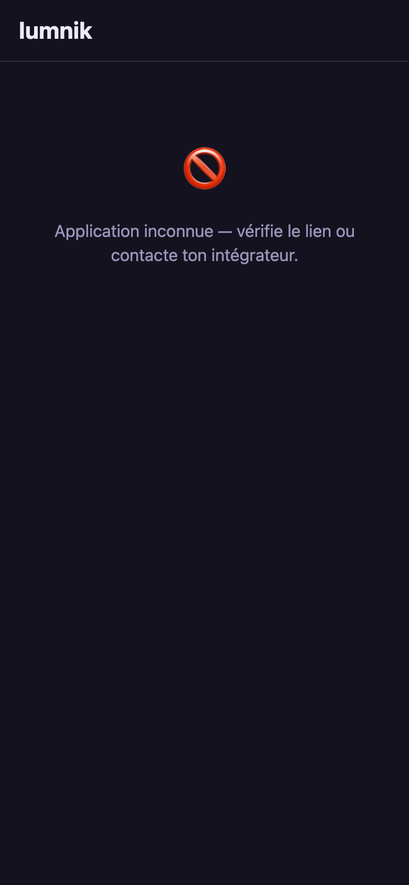
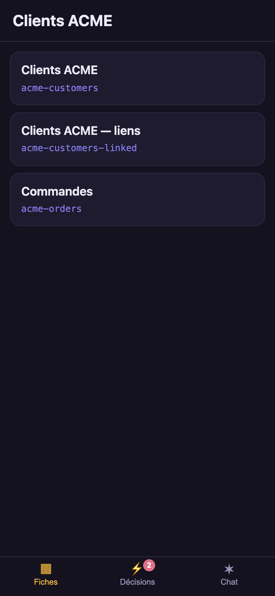
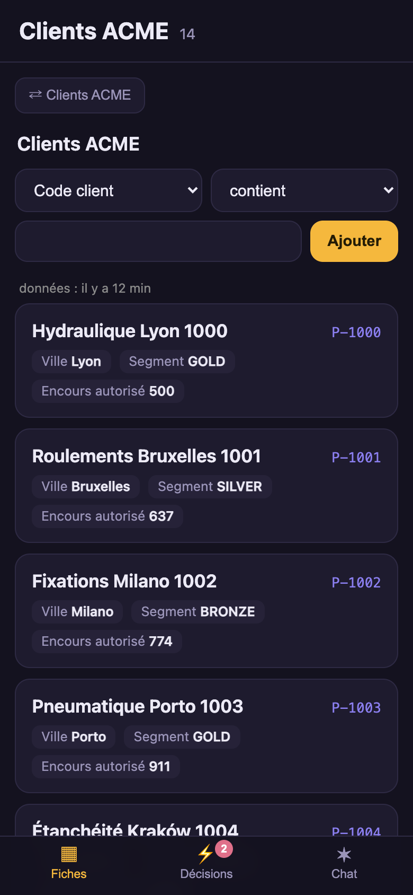
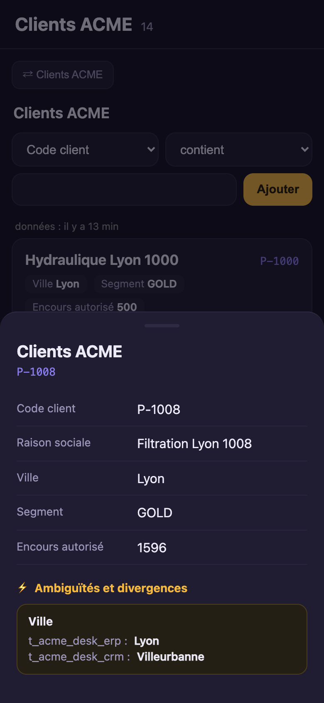
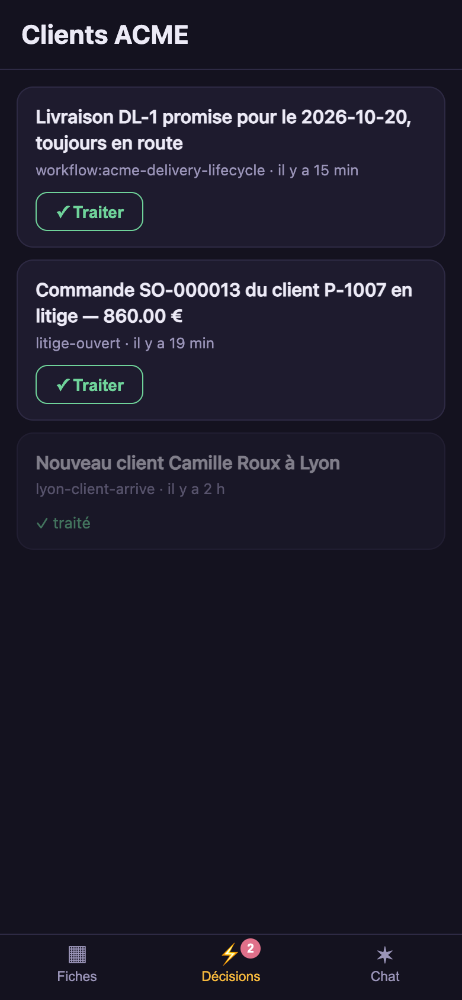
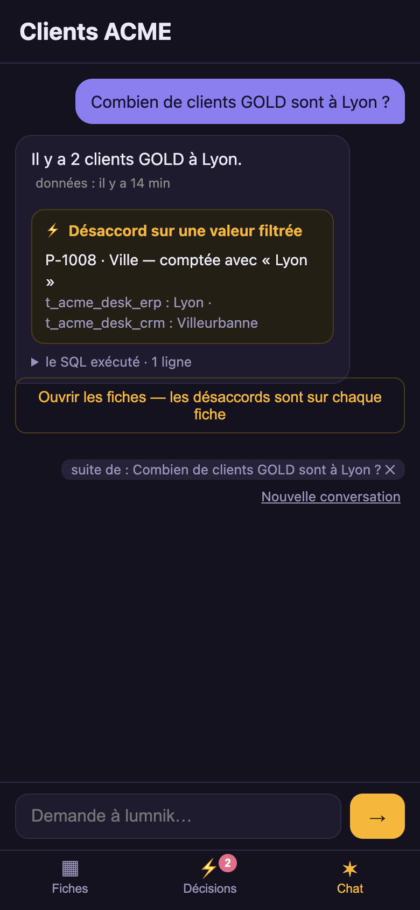

The PWA — your data in your pocket
The hub rendered on a phone. /app/ is served by the hub itself: no app store, no build step.
It installs from the browser like any PWA. One hub can serve several teams; ?m= selects the app.
The demo app uses French labels, but the app definition is language-neutral.
Declare a business app
A business app is a kind: App manifest: a title, a scope, an icon. The demo desk's:
# 20-desk.yaml — the demo desk as a business app: Clients ACME, for anyone holding scope:desk.
# Open it at /app/?m=desk once the desk's views are applied.
kind: App
apiVersion: apps.lumnik.io/v1
metadata:
name: desk
spec:
title: Clients ACME
scope: desk
icon: clients
default: true
$ lm app apply -f docs/apps/demo/apps/20-desk.yaml
Applied app "desk" → scope desk
default app — "clients" is no longer the default
$ lm app list
NAME TITLE SCOPE ICON ACCENT BACKGROUND DEFAULT TABS
clients Clients clients clients #8b7ff0 #14121f (all)
desk Clients ACME desk clients #8b7ff0 #14121f yes (all)
stock Stock stock stock #8b7ff0 #14121f (all)
Then two more gestures, or the app opens empty:
- Apply the views that the app reads:
lm view apply -f docs/apps/demo/views/10-customers.yaml(Views). - Grant the users the
scope:deskrole in Keycloak (Tenants, users & scopes).
The PWA reads the apps at every login: no rebuild, no redeploy.
| Field | Says |
|---|---|
icon |
one of clients, stock, generic, event, alert, contract. No upload. |
theme |
accentColor and backgroundColor, both optional. The accent is checked for contrast: it is also the chat bubble's background. |
default |
the app an address without ?m= opens. At most one. To move it, apply another app with default: true. |
tabs |
which tabs, in which order. Absent: every tab the hub offers. Choosing the tabs. |
- Change an app:
lm app get desk > desk.yaml, edit,lm app apply -f desk.yaml. - Remove it:
lm app rm desk.
Open it on a phone
https://<your-host>/app/ # the app declared default: true
https://<your-host>/app/?m=desk # the desk app
A phone installs a PWA only from an https address. The self-host stack has a
TLS proxy for that; on a LAN address, the phone
must trust its certificate first (how).
- Open
https://<host>/app/?m=deskand sign in. - iOS Safari: Share → Add to Home Screen. Android Chrome: the install prompt, or ⋮ → Add to Home screen.
- The icon and name are the app's own. Each app is its own home-screen icon.
For a fleet of phones, push the proxy's certificate and the app's address through your MDM.
An unknown ?m=, or an app of a scope the user does not hold:

What the business user sees
The screens below are the desk app on a phone, against the demo desk.
Records — the saved views



- One view for the app's scope: it opens directly. Several: a picker. None: an amber message asking for one.
- A view opens on its first 50 rows. Next › and ‹ Previous move a page.
- Filters are built, not typed: a column, an operator, a value. A text column offers
contains and =; a number or a date also offers
<and>; declared values use a list. Each filter is a chip; tap it to remove it. - Tap a row: its record opens, ending with its conflicts and ambiguities — here, the city of P-1008: Lyon in the ERP, Villeurbanne in the CRM.
- The data age is the time since the last run that fed the scope.
Inbox — decisions

- Newest first. ✓ Acknowledge is the same ack as
lm inbox ack. Acknowledged decisions are dimmed. - The badge on the tab counts the open decisions.
- It shows decisions from every scope the user holds, not only the open app's scope (who sees which decision).
Chat — ask your data (Pro)

- The same guarded ask as
lm ask, bound to the app's scope. The SQL is folded under the answer. - When the answer filters on a disputed value, an amber block names the record and the value used.
- A follow-up such as And in Paris? continues the previous question. lumnik shows the full question it answered; read it before trusting the figure.
- The context chip shows the question that the next message continues. Tap it to ask on its own. New conversation clears the thread. A reload forgets it; nothing is stored.
- A phrase such as the second one points at a result row that lumnik does not keep. The chat asks for an explicit value instead.
Search
Present on a hub with Search, for a user who may read an index. A word or two, then Search: ranked results, matched words highlighted.
- It searches only the app's scope.
- Counted values (a city, a segment) appear as chips: tap one to narrow.
- A result opens its record, read-only, with each source's value where they disagree.
Choosing the tabs
| Tab | Shown |
|---|---|
| Records | always |
| Inbox | always |
| Chat | on lumnik Pro, AI on |
| Search | on a hub with Search, for a user who may read an index |
To show fewer, or reorder them, list them in the app's manifest:
spec:
tabs: [fiches, inbox]
- The manifest names are
fiches,inbox,chat, andsearch. - The app opens on the first tab of the list that the hub has.
-
A tab the hub does not have is accepted, with a warning. It appears the day the hub has it, so the same manifest works on Open and on Pro:
$ lm app apply -f desk-app.yaml Applied app "desk" → scope desk tabs: fiches, inbox, search ! desk-app.yaml — 0 error(s), 1 warning(s) WARN spec.tabs[2] tab 'search' is not offered by this hub; the declaration is kept and takes effect when a module offering it is active → offered here: [fiches, inbox] -
Hiding a tab locks nothing: who may read what is still decided by roles and scopes.
- What a hub offers in the first place: Choosing what your hub offers.
Enabling Search for an app
- A Search provider in the hub (choosing a provider).
- Entities carrying the app's scope.
- A search index over them:
lm search apply -f index.yaml(declare one). The hub builds it within a minute. - The tab in the app's list, if the app lists its tabs: add
search.
lm search status shows whether each index is built and fresh.
On a tablet, on a display
| Width | Records | Navigation | Record |
|---|---|---|---|
| phone | cards | bottom tabs | bottom sheet |
| tablet (≥ 640 px) | table | bottom tabs | bottom sheet |
| display (≥ 900 px) | table | left rail | side panel |
Sign-in, offline
- Users sign in with their Keycloak account. Closing the tab ends the session.
- A refused scope shows the amber refusal, never a broken screen.
- Your own IdP: its client for the app needs the audience
lumnik-backend(Bring your own IdP). - Offline, the app reports that data will return with the network and offers Retry. It never shows stale rows: only the app shell is kept on the phone.
See also
- kind: View — the lists the Records tab shows.
- Inbox — the decisions behind the Inbox tab.
- Scopes — the boundary the whole app lives within.